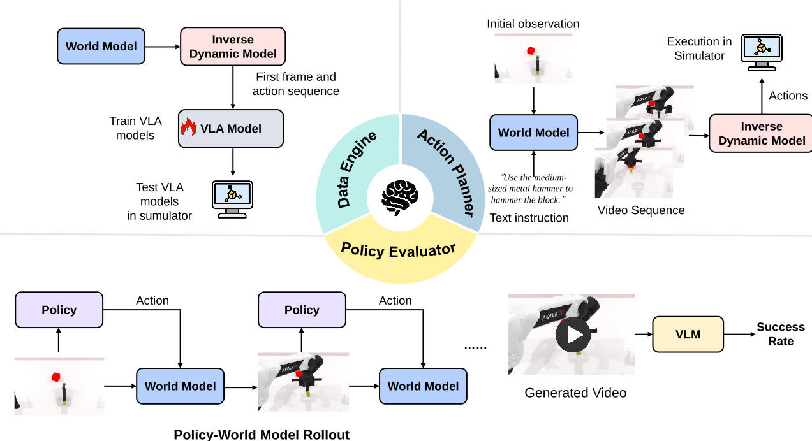

Good Case 1
Good Case 2
A Unified Benchmark for Evaluating Perception and Functional Utility of Embodied World Models
WorldArena is a unified benchmark designed to systematically evaluate embodied world models across both perceptual and functional dimensions. WorldArena assesses models through three dimensions: video perception quality, measured with sixteen metrics across six sub-dimensions; embodied task functionality, which evaluates world models as synthetic data engines, policy evaluators, and action planners. Furthermore, we propose EWMScore, a holistic metric integrating multi-dimensional performance into a single interpretable index.This work provides a framework for tracking progress toward truly functional world models in embodied AI.
| Benchmark | Video Quality | Embodied Tasks | Human | |||||||
|---|---|---|---|---|---|---|---|---|---|---|
| Visual Quality | Motion Quality | Content Consist. | Physics Adher. | Control ability | 3D Acc. | Data Engine | Policy Eval. | Action Planner | ||
| WorldModelBench | ✕ | ✕ | ✕ | ✓ | ✓ | ✕ | ✕ | ✕ | ✕ | ✓ |
| WorldSimBench | ✓ | ✓ | ✓ | ✕ | ✓ | ✕ | ✕ | ✕ | ✓ | ✓ |
| WorldScore | ✓ | ✓ | ✓ | ✕ | ✓ | ✓ | ✕ | ✕ | ✕ | ✓ |
| 4DWorldBench | ✓ | ✓ | ✓ | ✓ | ✓ | ✓ | ✕ | ✕ | ✕ | ✓ |
| EWMBench | ✕ | ✓ | ✓ | ✓ | ✓ | ✕ | ✕ | ✕ | ✕ | ✓ |
| WorldEval | ✕ | ✓ | ✓ | ✕ | ✕ | ✕ | ✕ | ✓ | ✕ | ✕ |
| World-in-World | ✓ | ✓ | ✕ | ✕ | ✓ | ✕ | ✕ | ✕ | ✓ | ✕ |
| WoW-World-Eval | ✓ | ✓ | ✓ | ✓ | ✓ | ✓ | ✕ | ✕ | ✓ | ✓ |
| WorldArena | ✓ | ✓ | ✓ | ✓ | ✓ | ✓ | ✓ | ✓ | ✓ | ✓ |
Table 1: Comprehensive comparison of WorldArena with existing world model benchmarks
WorldArena's comprehensive evaluation framework encompasses both perceptual quality and functional utility
WorldArena measures multi-faceted video quality, comprising 16 numerical metrics across 6 key sub-dimensions,, including visual quality, motion quality, content consistency, physics adherence, 3D accuracy, and controllability:

Figure 1: Six dimensions of perceptual evaluation with 16 specific metrics
WorldArena evaluates model performance in three core downstream tasks: Data Engine, Policy Evaluator, and Action Planner.

Figure 2: Embodied Task Functionality Evaluation Framework
World models can generate future observations based on external instructions, enabling synthetic data generation to supplement training data for downstream embodied policy models and alleviate the scarcity of real-world data. In this part, we treat world models as embodied data synthesis engines and evaluate their performance by measuring the gain they provide to policy models. We employ a two-phase training procedure. In the first phase, we fine-tune the world model on the RobotTwin 2.0 dataset and generate synthetic videos conditioned on the first frame and external instructions. In the second phase, we freeze the world model’s weights and integrate an inverse dynamics model (IDM) to extract actions from video features. This process produces paired video-action sequences. We then evaluate the impact of world model–generated synthetic data by training a baseline π₀.₅ policy model with varying amounts of synthetic data. The performance gain of the policy model reflects the world model’s capability to enhance policy learning.
We assess the capability of world models as environment proxies for evaluating policy performance. We train a series of policy models π₀.₅ with varying capabilities using the RoboTwin 2.0 dataset. These models are evaluated by interacting with an action-controllable world model, generating observation videos through a rollout process that continues until it exceeds 20% more frames than the corresponding ground truth video. Task success is evaluated using a VLM, which determines whether the embodied task was executed successfully. The success rate from the world model's evaluation is compared to that from the RoboTwin simulator. A high correlation between the two suggests effective simulation of real-world dynamics, while a low correlation indicates a mismatch in environmental transition simulation.
By predicting future state transitions, world models can function as the action-planning "brain" of an embodied agent. In this part, we investigate the ability of world models to execute embodied tasks in a closed-loop manner. Similar to the data synthesis engine setup, we pair the world model with an inverse dynamics model, where the world model takes textual instructions and the initial frame as input and outputs the corresponding action sequence for future operations. This sequence is then executed in the RoboTwin simulator, and the task success rate is measured to evaluate the world model's performance in closed-loop action execution.